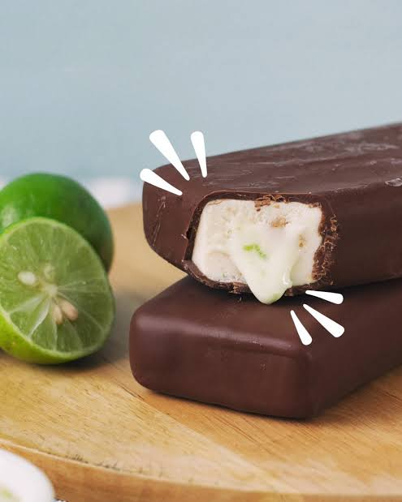

Paletas de tarta de lima cubiertas de chocolate

Descripción
Estas paletas de tarta de lima bañadas en chocolate convierten rebanadas de mini tarta de lima en un divertido postre en palito.
Sumergidas en cobertura de chocolate y refrigeradas hasta que la cobertura se endurece, son un dulce adorable tan fácil de preparar como de comer.
Ingredientes
- 1 paquete de mini tartas de lima congeladas
- 1 botella de cobertura de chocolate
- 12 palitos de helado
Paso a paso
- Corta cada tarta en 6 porciones e inserta un palito de helado en el extremo más ancho de cada porción.
- Vierta el contenido de la botella de chocolate en un recipiente pequeño.
- Sumerge con cuidado cada rebanada en la cobertura mágica hasta que quede completamente cubierta. Deja que escurra el exceso y colócalas en un plato o bandeja para hornear.
- Colocar en el refrigerador o congelador durante 5 a 10 minutos o hasta que esté listo para servir.